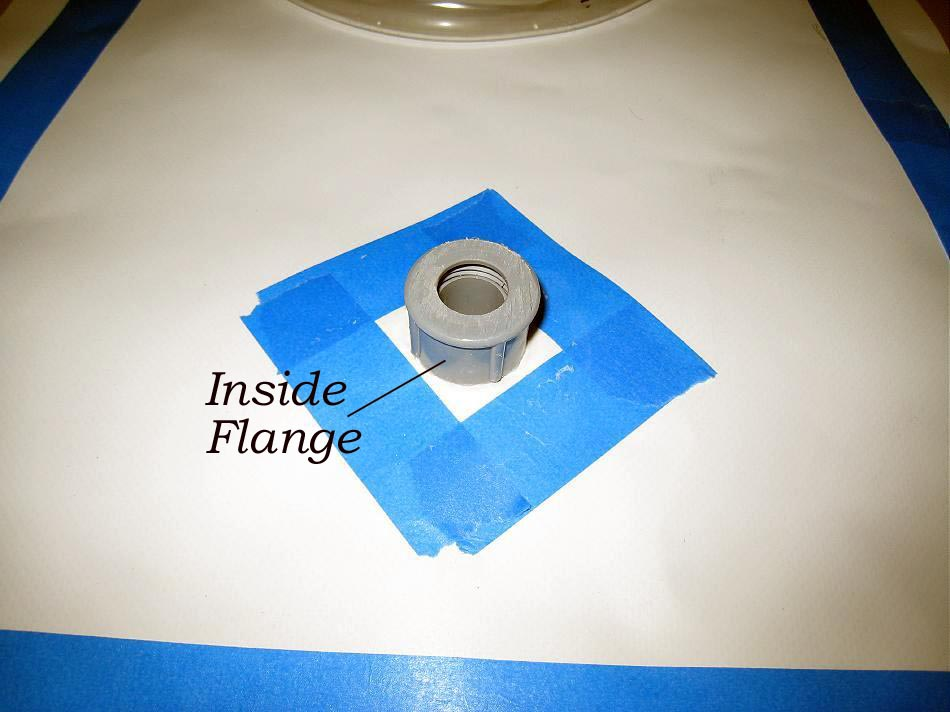

| PVC Floatation Bag ( page 6 of 8 ) | Menu Previous Page Next Page |
|

The lower profile section of the flange will be on the outside of the airbag, and the deeper section on the inside. Apply glue to the masked off area on both sides of the float bag section, and to the contact surfaces of each flange section. Screw the outside section through the hole in the PVC and tighten down against the skin. Screw on the opposite flange section as tightly as possible to create an airtight seal. After the cement dries, use a heat gun to reactivate the glue to further enhance the seal. Apply a thin layer of cement around the edge of the flange on both sides. Allow to dry.
|
|